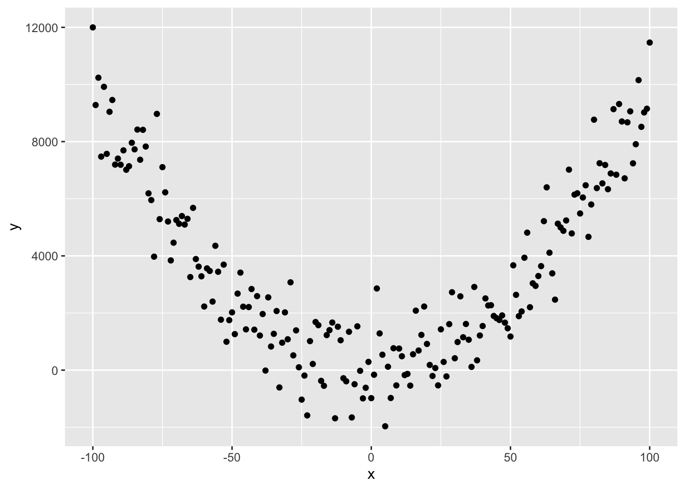

Chapter 8 Introduction
Welcome to An Introduction to Experimental Design ANOVA and ANCOVA
In this mini-module, you’ll be learning about the principles of experimental design and analysis of a few classic designes, the 2x2 ANOVA and ANCOVA experiments.
This module is compulsory for all, because it forms the foundation for most of the more complex experiments you will do as a researcher. And it is the major step beyond the t-test, 1-way ANOVA, simple regression and chi-square contingency table analyses we’ve covered thus far.
The learning outcome for this mini-module are that you will understand the basic ideas about
- Replication, Randomisation and Reducing Noise
- Precision, Bias and Systematic Error
- The Completely Randomised Design
- The Randomised Block Design
- The 2-way ANOVA
- The ANCOVA Design
In order to be successful with this final section of the course, you need to feel comfortable with the 1-way ANOVA and the Regression model. Please review these concepts. You can also refer to Chapter 5 and 6 in Getting Started with R (available as an online Resource via STARPlus) which covers a great deal of the mechanics of using R to do these types of models. Finally, you will also need to feel comfortable with dplyr and ggplot - we’ll be reinforcing the old stuff and introducing a few new tricks.
8.1 The Three Rs: The Foundation of Experimental Design.
Before we get started, it’s vital that you understand that there are some very basic principles needed to ensure that your experiments can provide robust and reliable inference (answers to your questions). The “3 R’s”.
- Randomisation: the random allocation of treatments to the experimental units, to avoid confounding between treatment effects and other unknown effects.
- Replication: the repetition of a treatment within an experiment, to quantify the natural variation between experimental units and increase accuracy of estimated effects.
- Reduce noise: by controlling as much as possible the conditions in the experiment, e.g. by grouping of similar experimental units in blocks.
As we develop our understanding of experimental design, you should come back to these core definitions and see if your understanding of them has improved. We work on these concepts in the next chapter of the book.
8.2 The General Linear Model
This section of the course is focused on a class of model called the General Linear Model. It is not a GLM. The GLM is a generalised linear model. I know, right?
The general linear model is, as we learned in the past few weeks, a model fit in R with the lm() function. It includes regression, ANOVA, ANCOVA and variations of these.
There are a few key characterstics to remember about these models. The general linear model has the following form:
\(y = \beta_{0}+\beta_{1}*X_{1}+\beta_{2}*X_{2}+\epsilon\)
Where the \(y\) is the response variable, the \(\beta\)’s are estimated parameters, the \(X\)’s are the predictor variables and the \(\epsilon\) comes from a Gaussian distribution with zero mean and constant variance.
Let’s decompose that a bit more.
There are two types of predictor variable:
Metric predictor variables are measurements of some quantity that may help to predict the value of the response. For example, if the response is the blood pressure of patients in a clinical trial, then age, fat mass and height are potential metric predictor variables. You may know these as continuous explanatory (independent) variables
Factor variables are labels that serve to categorize the response measurements into groups, which may have different expected values. Continuing the blood pressure example, factor variables might be sex and drug treatment received (drug A, drug B or placebo, for example). You may also know these as categorical explanatory (independent) variables.
So, you hopefully can see how this general linear model is capable of representing
- ANOVA – Analysis of variance -> Predictors are factors.
- Regression -> Predictor is a metric variable (continuous variable).
- Multiple regression -> Predictors are metric variables (continuous variables).
- ANCOVA - Analysis of co-variance -> Predictors are a mixture of metric variables (continuous variables) and factors.
Finally, it is important to understand that non-linear relationships such as these data below can be modelled with a linear model:

How, you ask!? Well…. consider this equation:
\(y = 0.01 + x + x^{2} + \epsilon\)
Referring to our generic model structure above,
\(y = \beta_{0}+\beta_{1}*X_{1}+\beta_{2}*X_{2}+\epsilon\)
we hopefully can see that \(\beta_{0} = 0.01\), \(\beta_{1} = 0\) and \(\beta_{2} = 1\), where \(X_{2} = X^{2}\)!
Linear models are perfectly capable of being used to estimate non-linear relationships!
Here is the code to make that figure.
# set x range
x <- -100:100
# define y without error
y_det <- 0.01+x^2
# add some random variation
y <- y_det+rnorm(length(x),0,1000)
# create dataframe and plot
df <- data.frame(x, y)
ggplot(df, aes(x = x, y = y))+
geom_point()